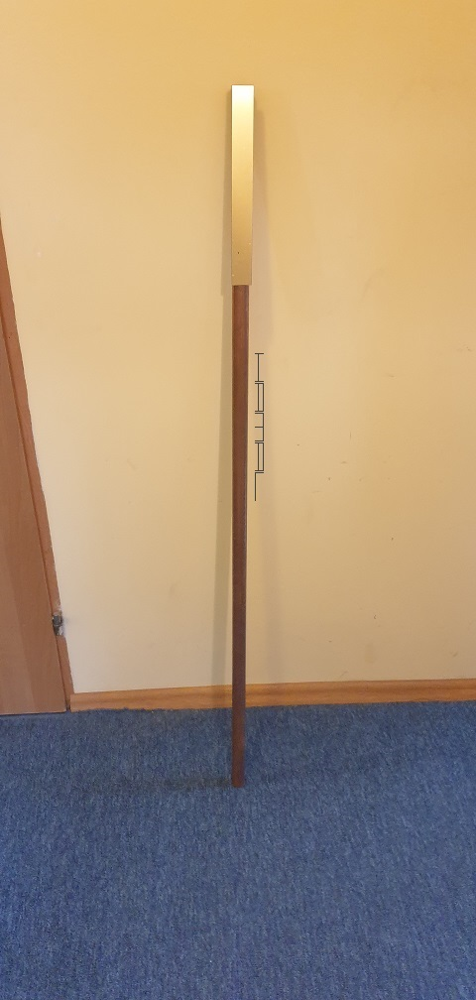
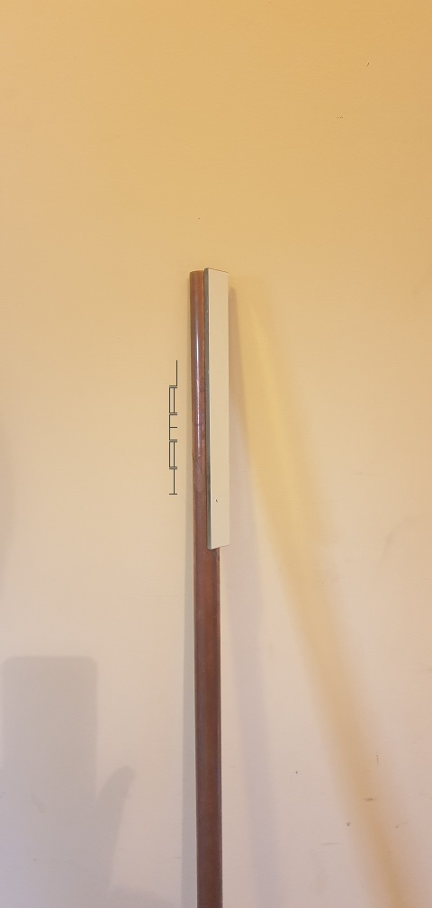
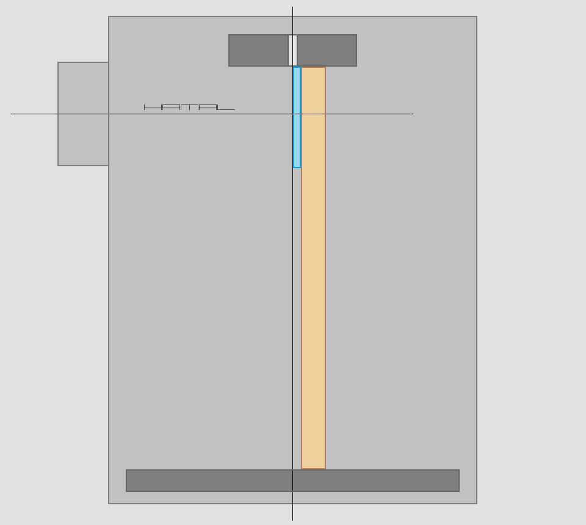
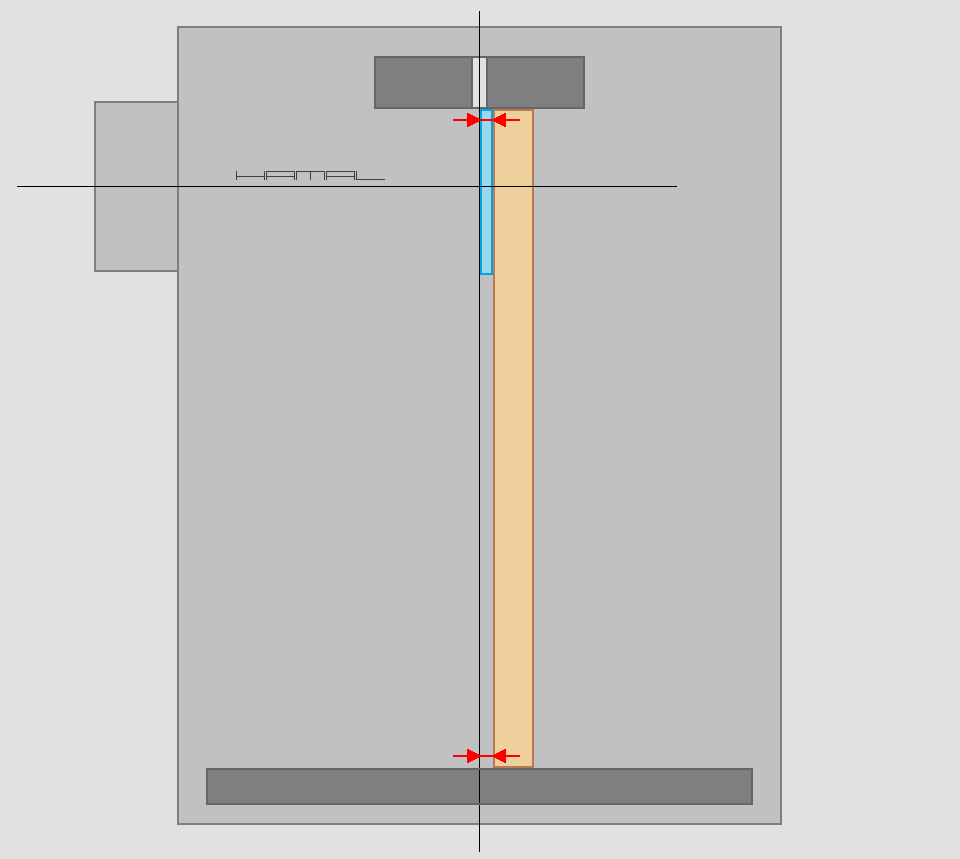
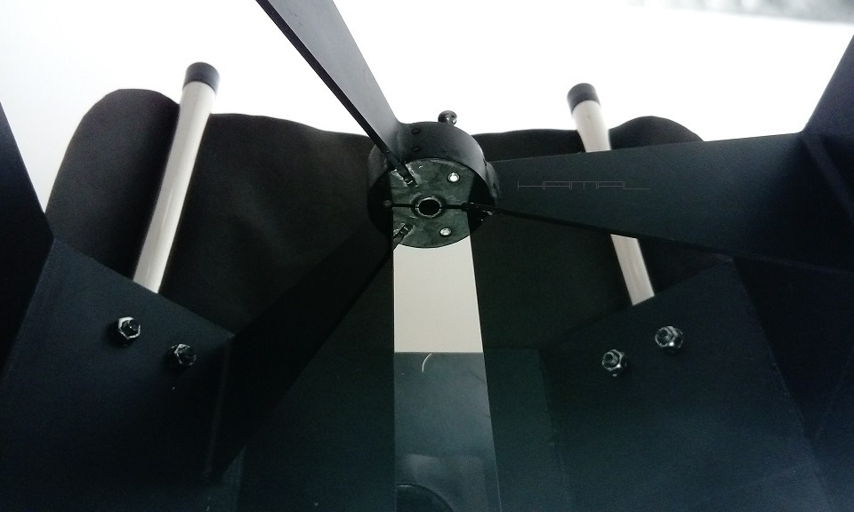
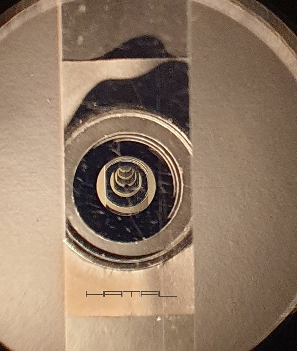
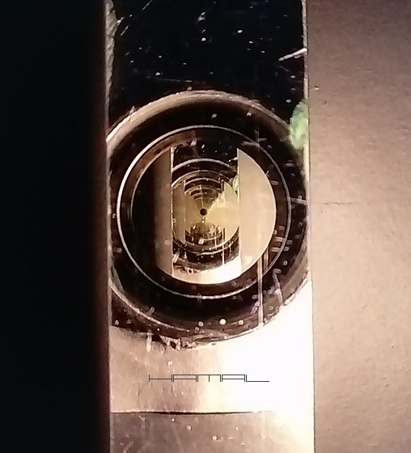

WZGLĘDEM OSI OPTYCZNEJ LUSTRA GŁÓWNEGO TELESKOPU
.
Opis budowy kolimatora mojego pomysłu oraz sposobu jego zastosowania
12-09-2020
|
WSTĘP . Do chwili powstania w mojej głowie opisanej tu metody, nie istniała bezpośrednia metoda kolimacji prostopadłości wyciągu okularowego względem osi optycznej teleskopu astronomicznego, a przynajmniej ja, zajmując się astronomią od ponad 20 lat, o takiej nie słyszałem. Mając powyższe na względzie, uważam się za ojca poniższej techniki :) . Istnieją metody pośrednie takie jak: poziomice, nitki, znaczniki po przeciwnej stronie tuby, ale one wszystkie, nie gwarantują bezwzględnej dokładności, oraz nie sprawdzą się kompletnie w teleskopach kratownicowych. OPIS KONCEPCJI . Opisany tu kolimator mojego pomysłu, kolimuje oś wyciągu okularowego, względem osi optycznej lustra głównego, pozwalając w ten sposób uzyskać, idealną prostopadłość przecięcia się obu osi. Samego przecięcia tych osi nim się nie ustawia, to musimy uzyskać innymi metodami, zawartymi w opisie kolimacji teleskopu, więc nim zaczniemy tutejszą kolimację, uprzednio winniśmy owe przecięcie osi zapewnić. Mając na względzie, jak zawsze wielką zmorą w procesie kolimacji było ustawienie idealnej prostopadłości osi wyciągu okularowego względem osi optycznej lustra głównego (przecięcie osi łatwo jest uzyskać prostymi metodami) i jak wielkie znaczenie ma ten aspekt dla prawidłowej kolimacji teleskopu, zyskuje na wartości niniejsza metoda i konieczny trud włożony w jej wykonanie. Kolimując teleskop Autokolimatorem, bez zadbania o ustawienie osi wyciągu okularowego, uzyskamy idealną prostopadłość osi optycznej wyciągu i lustra głównego, jednak... to wyciąg okularowy i jego ustawienie determinuje całą resztę, więc gdy ustawienie wyciągu jest nieprawidłowe, lustro wtórne i lustro główne w procesie autokolimacji będą ustawiać się nieprawidłowo pod jego dyktando, zatem, nim przystąpimy do właściwej kolimacji optyki, należy jak najdokładniej ustawić oś wyciągu okularowego względem osi lustra głównego. OPIS BUDOWY KOLIMATORA . Kolimator prostopadłości osi wyciągu okularowego względem osi lustra głównego to idealnie prosty i odpowiednio długi korpus, z przyczepionym do niego paskiem lustra. Długość korpusu nie jest przypadkowa ani dowolna, musi zostać tak dobrana, aby korpus z jednej strony sięgał od środka celi lustra głównego (pozbawionej lustra głównego), a z drugiej strony do środka pająka (pozbawionego lustra wtórnego). Do idealnie prostego korpusu, przyklejamy pas lustra, najlepiej długości ok. 20-30 cm. Pas lustra nie może być zbyt krótki, bo istnieje szansa, że ulegnie on chwilowej nierówności korpusu i nie będzie idealnie równoległy, nie może być też zbyt długi, bo ulegnie deformacji z braku sztywności własnej. Lustro to nie może być tego rodzaju, co zwykłe lustra łazienkowe, w których powłoka odblaskowa znajduje się za warstwą szkła. Powłoka musi znajdować się po naszej stronie, podobnie jak ma to miejsce w lustrach teleskopu. Takowe lustro pozyskałem z kserokopiarki, ale są też one często widoczne w innych urządzeniach wielofunkcyjnych, tuż pod szybą do kserowania, skanowania. Kolimator prostopadłości osi wyciągu okularowego teleskopu. .  Kolimator zamontowany w teleskopie .  SPOSÓB UŻYCIA . Proces kolimacji zaczniemy od wyznaczenia miejsca podparcia korpusu kolimatora w celi lustra głównego i choć teoretycznie winien to być geometryczny środek celi, nas interesuje precyzyjne jego wyznaczenie z natury. W tym celu, do wyciągu okularowego wkładamy kolimator laserowy, następnie tak regulujemy lusterko wtórne, aby kropka lasera trafiała idealnie w znacznik centralny lustra głównego. Mając nadal włączony laser, wyjmujemy z celi lustro główne i zaznaczamy na celi miejsce, gdzie trafia kropka lasera. W ten sposób wyznaczyliśmy dolne miejsce podparcia korpusu kolimatora w celi. Następnie wymontowujemy lusterko wtórne teleskopu. W tym momencie mocujemy w tubie teleskopu nasz kolimator w ten sposób (patrz grafika poniżej), aby lustro kolimatora przecinało środkowy otwór pająka w połowie, a na dole, w celi, korpus kolimatora, był odsunięty od wyznaczonego punktu o grubość lustra kolimatora (patrz odległości oznaczone na grafice czerwonymi strzałkami). Warunek ten jest niezbędny, aby zachować równoległość korpusu kolimatora do osi optycznej teleskopu. Dla ułatwienia możemy na dole korpusu kolimatora przykleić coś, co posiada taką samą grubość, co pasek lustra, i wtedy dosuwać kolimator do oznaczonej na celi lustra głównego kropki. Następnie w wyciągu okularowym montujemy Autokolimator (niestety, do tego zadania jest nam niezbędny Autokolimator, pudełko z otworkiem nic nie pomoże), przez którego otwór obserwujemy wzajemne odbicia w pasku lustra kolimatora prostopadłości i w Autokolimatorze. Źle ustawiony wyciąg okularowy, da nam obraz odbić uciekających w dół, lub w górę, ustawiony idealnie prostopadle do osi lustra głównego, da nam obraz symetrycznych odbić. Naszym zadaniem teraz, jest za pomocą śrub kolimacyjnych korpusu wyciągu, lub jeśli takich nie posiadamy, to za pomocą podkładanych pod rogi korpusu wyciągu okularowego podkładek, doprowadzić do sytuacji, w której obraz odbić wzajemnych stanie się idealnie symetryczny (patrz zdjęcia poniżej). Odległości oznaczone czerwonymi strzałkami powinny być identyczne. .  Kolimator Prostopadłości Wyciągu przy pająku lustra wtórnego .  Widok przez otwór Autokolimatora przed kolimacją wyciągu okularowego. Nieprawidłowa pozycja wyciągu okularowego. .  Widok przez otwór Autokolimatora po kolimacji wyciągu okularowego. Prawidłowa pozycja wyciągu okularowego. .  Teraz jeszcze tylko PROSTOPADŁOŚĆ MATRYCY oraz ANTYKOLIMACJA TELESKOPU i można dobierać odległość korektora komy :D 
|